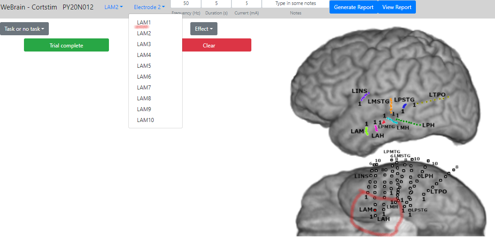
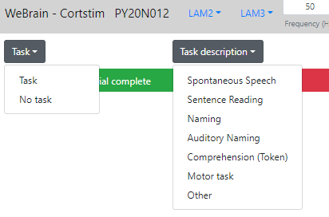
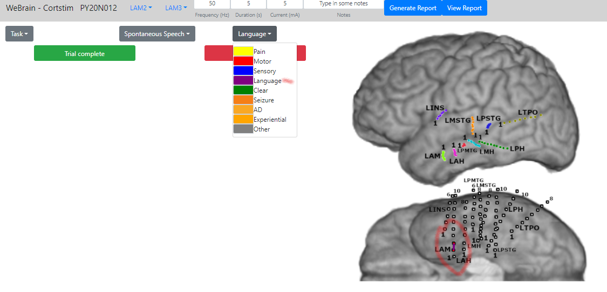
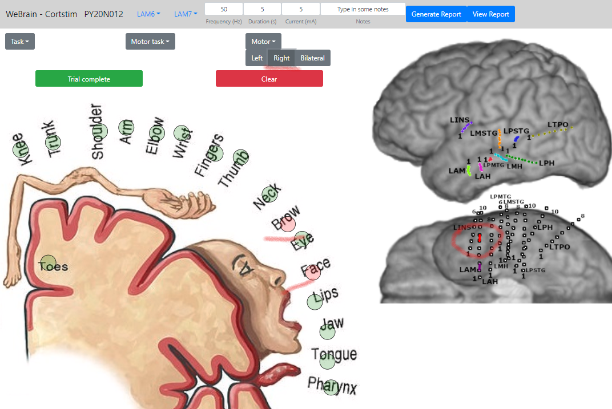
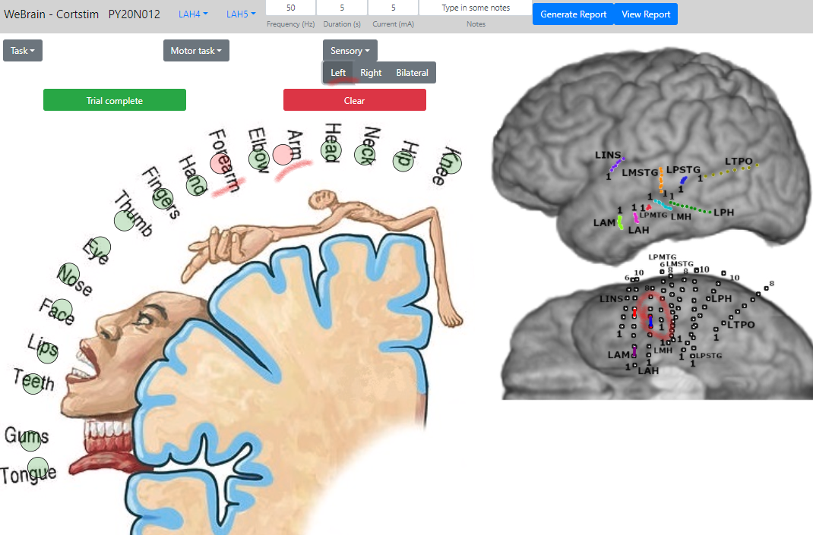
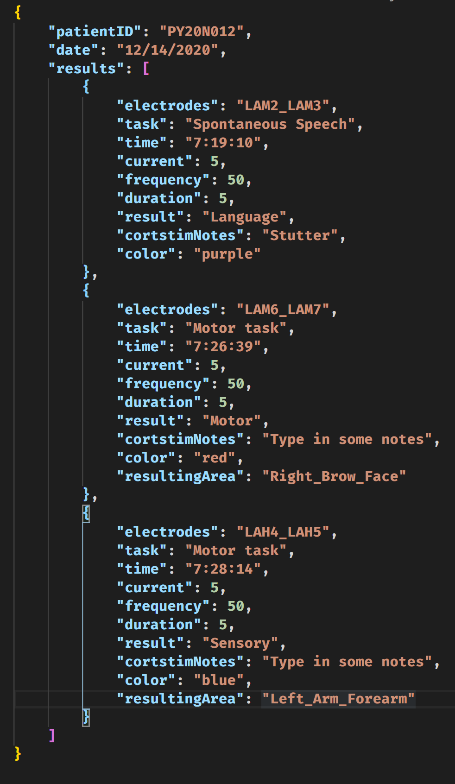
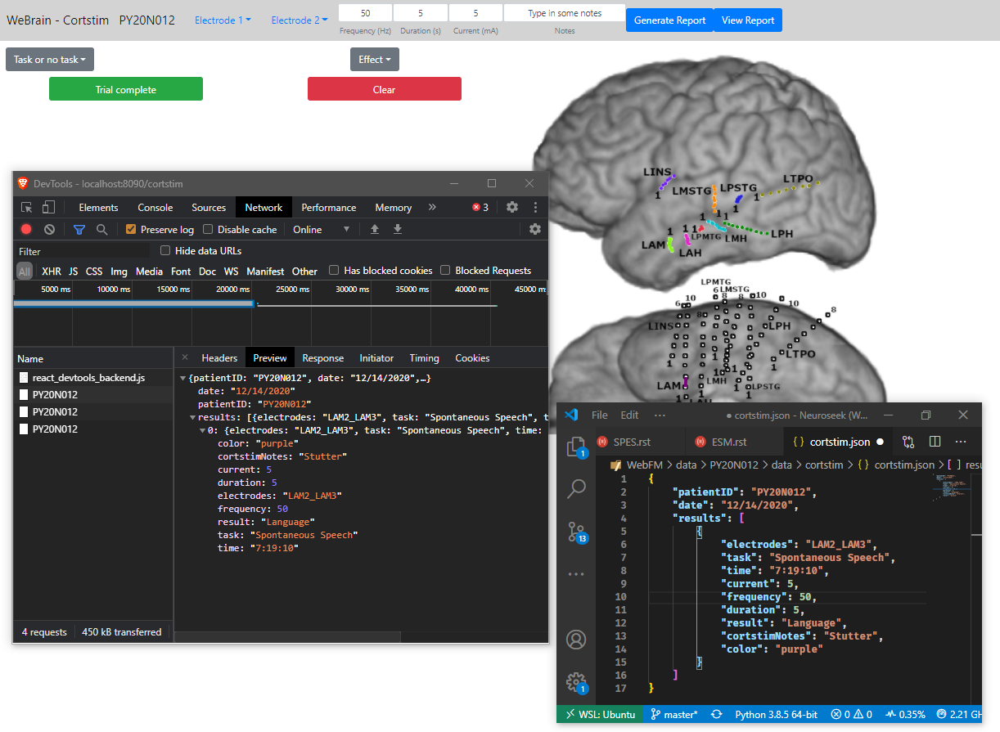
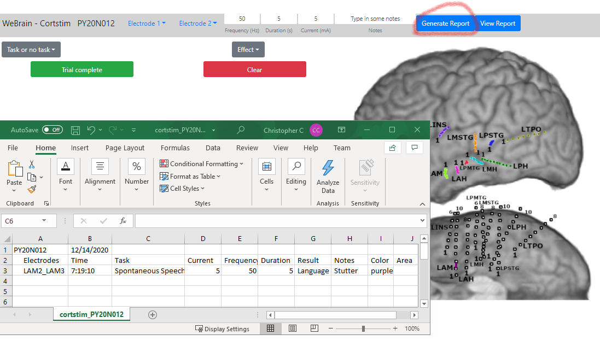

Cortical Stimulation¶
Getting started¶
Go to Dashboard
Select a patient from the dropdown menu
Select “Cortical Stimulation” from the task bar
Modify parameters:
Electrodes
Current
Frequency
Duration
Notes
Select “Task” from dropdown (or “No Task” if titrating)
If running a task, select which task from the dropdown
Select which effect (or “Clear”) was elicited during stimulation
If a motor or sensory response was recorded:
Select which side of the body the response was recorded from
Select which areas on the homonculus
Select “Trial complete” to submit the results or “Clear” to undo the result
Select “Generate Report” to create a spreadsheet
Breakdown¶
Electrode selection¶
Modifying parameters¶
Task selection¶
Effect selection¶
Motor and Sensory responses¶
|  |  |
|  | |
Send data to server¶
Generate report¶
Data Structure¶
{
"patientID": "PY#",
"date": "01/01/20",
"results": [
{
"electrodes": "elec1_elec2",
"task": "Comprehension (Token)",
"time": "01:01:01",
"current": 5,
"frequency": 50,
"duration": 5,
"result": "Language",
"notes": "Notes placed here.",
"color": "purple"
}
]
}